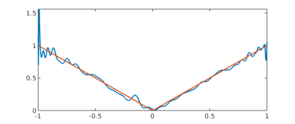

function VandermondeArnoldi()
This example discusses an extremely useful practical tool introduced at the end of 2019 in [1].
1. Vandermonde matrices, interpolation, and least-squares
An $m\times n$ Vandermonde matrix has the form $$ A = \pmatrix{1 & x_1 & \dots & x_1^n \cr 1 & x_2 & \dots & x_2^n \cr \vdots & \vdots & & \vdots \cr 1 & x_m & \dots & x_m^n} $$ where ${x_j}$ is a vector of distinct numbers. If $m=n+1$ and $f$ is a column vector of $m$ data values, the equations $$ Ac = f $$ give coefficients for the degree $n$ polynomial interpolant to the data, $$ p(x) = \sum_{k=0}^n c_k x^k . $$ If $m> n+1$, we have a rectangular matrix and we can write $$ Ac \approx f $$ to indicate that the system is to be solved in the least-squares sense. This will give a degree $n$ polynomial approximation.
Matlab has long had a command vander to generate such matrices, though the columns are ordered in the reverse direction, in keeping with Matlab's convention of ordering polynomial coefficients from highest degree to lowest. Chebfun has an overload of vander to produce a quasimatrix with the same structure, i.e., columns $1, x, x^2, \dots , x^n$, where $x$ is a chebfun. Again, following Matlab, the columns are actually ordered in the reverse direction.
2. Ill-conditioning of the matrices, not the interpolation problem
Unless the points ${x_j}$ are uniformly distributed on the unit circle, Vandermonde matrices are exponentially ill-conditioned as $n\to\infty$. Thus for example here we examine the matrices for degree 16 and 32 interpolation in Chebyshev points:
format short cond(vander(chebpts(17))) cond(vander(chebpts(33)))
ans = 5.4282e+05 ans = 6.8311e+11
There isn't any real need to call the vander command. We could equally well have generated the numbers like this:
cond(chebpts(17).^(0:16)) cond(chebpts(33).^(0:32))
ans = 5.4282e+05 ans = 6.8312e+11
This ill-conditioning is a reflection of the horrors of the monomial basis, not of any difficulty with the underlying interpolation problem. In fact, these interpolation problems are extraordinarily well conditioned, as we can see by examining their Lebesgue constants (see [ATAP], chapter. 12):
[~, L16] = lebesgue(chebpts(17)); L16 [~, L32] = lebesgue(chebpts(33)); L32
L16 =
2.7247
L32 =
3.1682
If we look at the Chebfun quasimatrices for the function $x$ on the unit interval, we find that the condition numbers are amazingly close to what we found before:
x = chebfun('x');
cond(vander(x,17))
cond(vander(x,33))
ans = 5.4803e+05 ans = 6.2361e+11
Again there was no need for the vander command:
cond(x.^(0:16)) cond(x.^(0:32))
ans = 5.4803e+05 ans = 6.2360e+11
These are condition numbers of matrices of sizes $\infty \times 17$ and $\infty \times 33$, respectively. The fact that the numbers for our discrete and continuous Vandermonde matrices are so close reflects the fact that Chebyshev points are good approximations to the continuum of $[-1,1]$. If we use equispaced points, the numbers come out worse:
cond(vander(linspace(-1,1,17))) cond(vander(linspace(-1,1,33)))
ans = 9.9831e+06 ans = 5.2567e+14
If we try to do interpolation or least-squares fitting with these ill-conditioned matrices or quasimatrices, we quickly run into trouble at larger values of $n$. In MATLAB, the traditional codes for computing a polynomial and then evaluating it are polyfit and polyval, whose essences (with the columns ordered by increasing degrees) look like this:
function c = polyfit(x,f,n) A = x.^(0:n); c = A\f; end function y = polyval(c,s) n = length(c)-1; B = s.^(0:n); y = B*c; end
These codes work for both matrices and quasimatrices.
For example, let's fit the absolute value function by a polynomial of degree 80:
f = abs(x); c = polyfit(x,f,80); y = polyval(c,x)
Warning: Matrix is close to singular or badly scaled. Results may be inaccurate.
RCOND = 4.017379e-17.
y =
chebfun column (1 smooth piece)
interval length endpoint values
[ -1, 1] 69 1.2 1.1
vertical scale = 1.5
We'll plot the result in a moment. But here's a sign that it's not good: the maximum is much bigger than $1$:
max(y)
ans =
1.5596
The reason is that the coefficients $c$ are huge because the basis is so ill-conditioned, and cancellation has destroyed the accuracy:
norm(c,inf)
ans = 3.5308e+14
3. Vandermonde with Arnoldi
It turns out there is a simple way to fix the problem: instead of working with a Vandermonde matrix or quasimatrix, generate a matrix whose columns span the same spaces by the Arnoldi process. A short paper presenting these ideas with four computed examples can be found at [1].
Here is a function polyfitA that will do the trick for quasimatrices; the "A" stands for Arnoldi:
function [d,H] = polyfitA(x,f,n)
Q = 1 + 0*x;
H = zeros(n+1,n);
for k = 1:n
q = x.*Q(:,k);
for j = 1:k
H(j,k) = Q(:,j)'*q;
q = q - H(j,k)*Q(:,j);
end
H(k+1,k) = norm(q);
Q = [Q q/H(k+1,k)];
end
d = Q\f;
end
And here is the corresponding polyvalA
function y = polyvalA(d,H,s)
W = 1 + 0*s;
n = size(H,2);
for k = 1:n
w = s.*W(:,k);
for j = 1:k
w = w - H(j,k)*W(:,j);
end
W = [W w/H(k+1,k)];
end
y = W*d;
end
If we try them on the same example, we get the correct result:
[d,H] = polyfitA(x,f,80);
Here's a plot of the unstable and stable interpolants:
yA = polyvalA(d,H,x) plot([y yA])
yA =
chebfun column (1 smooth piece)
interval length endpoint values
[ -1, 1] 81 1 1
vertical scale = 1

References
[1] P. D. Brubeck, Y. Nakatsukasa, and L. N. Trefethen, Vandermonde with Arnoldi, submitted to SIAM Review, 2019; also available at arXiv and at https://people/.maths.ox.ac.uk/trefethen/papers/.
[2] L. N. Trefethen, Approximation Theory and Approximation Practice, extended edition, SIAM, 2020.
end